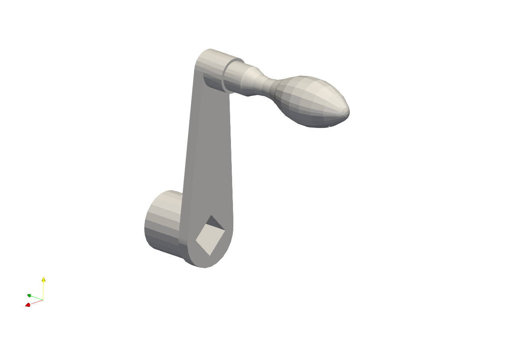
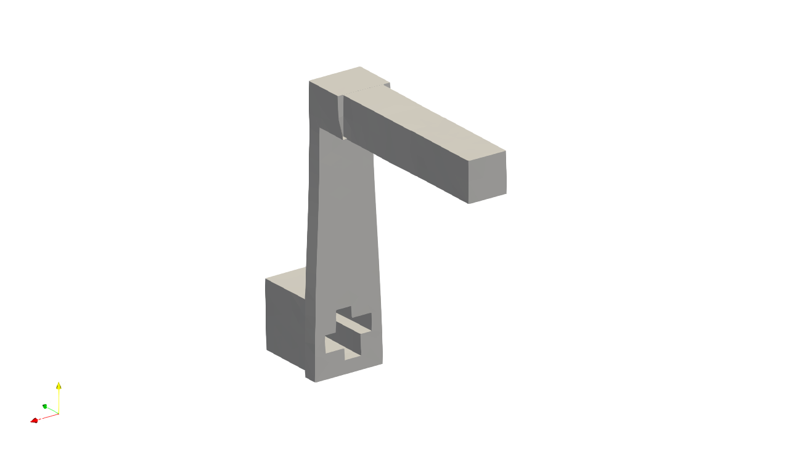
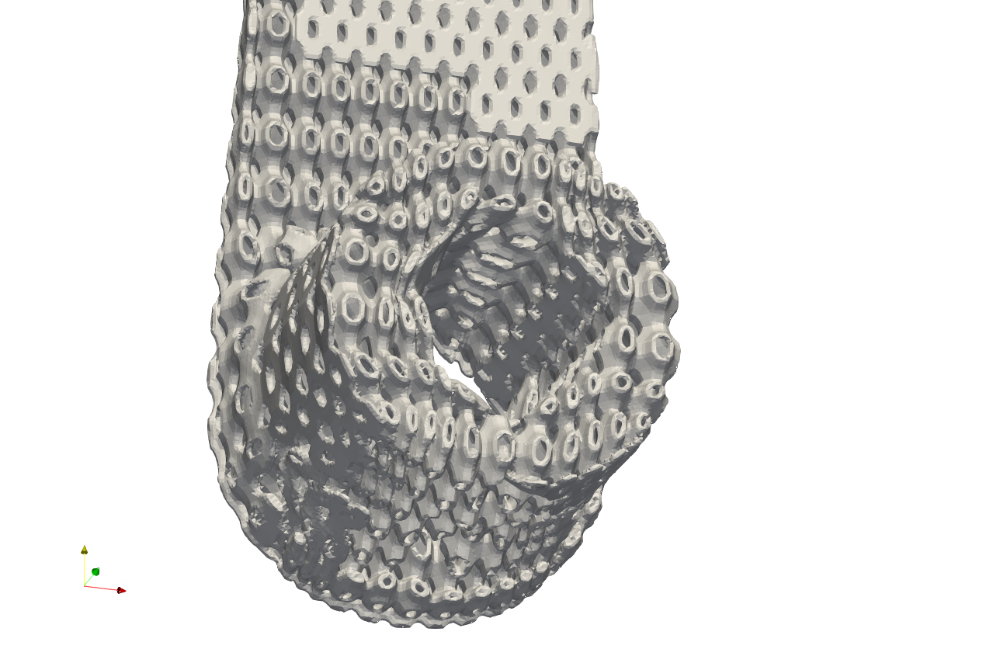

Conformal Lattice 02#
Artisan incorporates a set of keywords designed to facilitate the generation of hexahedral element-based meshes for creating conformal lattices. This process follows a structured pipeline of keywords that handle mesh transformation, deformation, and mapping. The core principle is straightforward: transform the original shape into a near-polycube form, generate the hexahedral mesh in this intermediate state, and then map the mesh back to the original shape. User may find the example work flow (including three JSON files) at the folder .//Test_json//ConformalLattice//HexConformal//.
For the theoretical background of the polycube based hex meshing algorithm, user may refer to the following published papers:
Xianzhong Fang, Weiwei Xu, Hujun Bao, and Jin Huang. 2016. All-hex meshing using closed-form induced polycube. ACM Trans. Graph. 35, 4, Article 124 (July 2016), 9 pages. https://doi.org/10.1145/2897824.2925957
Lingxiao Li, Paul Zhang, Dmitriy Smirnov, S. Mazdak Abulnaga, and Justin Solomon. 2021. Interactive all-hex meshing via cuboid decomposition. ACM Trans. Graph. 40, 6, Article 256 (December 2021), 17 pages. https://doi.org/10.1145/3478513.3480568
Gregson, J., Sheffer, A. and Zhang, E. (2011), All-Hex Mesh Generation via Volumetric PolyCube Deformation. Computer Graphics Forum, 30: 1407-1416. https://doi.org/10.1111/j.1467-8659.2011.02015.x
Note
Like any other algorithm, the algorithm/keyword pipeline presented here has its limitations. While it is designed to effectively transform and map meshes for specific use cases, it may not perform optimally for all types of geometries or scenarios. The current implementation is particularly suited for the geometries with smaller lattice unit infill and fewer intricate features, where a higher degree of mesh freedom is necessary to achieve accurate approximations. Users are encouraged to assess its applicability to their specific needs and consider integrating it with other tools or techniques to achieve the best possible results.
Warning
This feature requires users to carefully check up the output of every single step, and make sure the results satisfy the requirements.
PolyCube Generation#
This is the first step in the process. Polycube generation transforms the given tetrahedral mesh into a near-polycube shape. At a later stage, users can utilize other meshing tools available in Artisan, such as Cartesian meshers, to create a more fitted mesh for this transformed shape. Here uses the crank handle model as example to create the polycube shape. The example file is HexConformal_Step01_Polycube.json.
{"Setup":{ "Type" : "Geometry",
"Geomfile": ".//sample-obj//crank_handle.stl",
"Rot" : [0.0,0.0,0.0],
"res":[1.0,1.0,1.0],
"Padding": 5,
"onGPU": false,
"memorylimit": 16106127360
},
"WorkFlow":{
"1": {"Proc_Mesh_PolyCube":{
"inp_meshfile": ".//sample-obj//crank_handle.inp",
"out_meshfile": ".//Test_results//crank_handle_polycube.inp",
"cube": 5000000.0,
"smoothness": 1.0,
"distortion_angle": 1.0,
"distortion_volume": 1.0,
"max_iteration": 200
}
},
"2": {
"Proc_Mesh_ExtractSurf": {
"inp_meshfile": ".//Test_results//crank_handle_polycube.inp",
"out_meshfile": ".//Test_results//crank_handle_polycube_exterior.stl",
"isSplitTris": false,
"Elem_Type": "Tet"
}
}
},
"PostProcess":{"CombineMeshes": true,
"RemovePartitionMeshFile": false,
"RemoveIsolatedParts": false,
"ExportLazPts": false}
}
The JSON configuration above performs two tasks: first, it generates a polycube shape using the provided tetrahedral mesh, and second, it extracts the exterior triangular mesh as an STL file for subsequent processing. The keyword Proc_Mesh_PolyCube drives the deformation of the input mesh into a polycube shape. This process solves an optimization problem based on an objective function that combines shape cubeness, distortion minimization, and surface smoothness. The current implementation uses L-BFGS-B solver in scipy to solve this equation. The parameters for this keyword are explained in detail below.
Parameter |
Details |
|---|---|
|
input tetrahedral mesh file path and file name. |
|
file path and name for the resulting polycube shape mesh. |
|
a float number controlling the weight of cubeness in the deformation. |
|
a float number controlling the weight of smoothness in the deformation. The recommended value is |
|
a float number controlling the weight of shape distortion. The recommended value is |
|
a float number controlling the weight of volumetric distortion. The recommended value is |
|
The maximum number of iteration. |
Below shows comparison between the original crank handle model, and the generated polycube shape of the given mesh. The exterior triangle mesh will be then used for creating Cartesian mesh.
 Cartesian Meshing#
The example file HexConformal_Step02_CartesianMesh.json demonstrates the use of an existing Artisan keyword to generate a Cartesian mesh. Users can opt for other Cartesian mesher in Artisan to better suit their specific requirements, such as achieving locally varying mesh sizes or different element densities.
{
"Setup": {
"Type": "Geometry",
"Geomfile": ".//sample-obj//crank_handle.stl",
"Rot": [0.0, 0.0, 0.0],
"res": [1.0, 1.0, 1.0],
"Padding": 5,
"onGPU": false,
"memorylimit": 16106127360
},
"WorkFlow": {
"1": {
"Gen_BasicCartesianHexMesh": {
"num_elem": [15, 30, 25],
"x_range": [0.0, 24.0],
"y_range": [0.0, 78.0],
"z_range": [0.0, 80.0],
"ori": [-12.0, -12.0, -80.0],
"Normal": [0.0, 0.0, 1.0],
"z_angle": 0.0,
"Meshfile": ".//Test_results//crank_handle_polycube_mesh.med",
"Geomfile": ".//Test_results//crank_handle_polycube_exterior.stl",
"numPrjLayers": 1,
"LayerDepth": 2.0,
"numCoverNodes": 2
}
}
},
"PostProcess": {
"CombineMeshes": true,
"RemovePartitionMeshFile": false,
"RemoveIsolatedParts": false,
"ExportLazPts": false
}
}
Pull back Transformation#
The last stage is transforming the Cartesian mesh to the original shape of the crank handle model. The example file HexConformal_Step03_Mapping.json shows the usage of keyword Proc_Mesh_MappingHexElem to pull back the Cartesian mesh to map on the original shape of crank handle, and use the new mesh to perform the conformal lattice infill.
{
"Setup": {
"Type": "Geometry",
"Geomfile": ".//sample-obj//crank_handle.stl",
"Rot": [0.0, 0.0, 0.0],
"res": [0.2, 0.2, 0.2],
"Padding": 5,
"onGPU": false,
"memorylimit": 16106127360
},
"WorkFlow": {
"1": {
"Proc_Mesh_MappingHexElem": {
"inp_original_meshfile": ".//Test_results//crank_handle_polycube.inp",
"inp_deformed_meshfile": ".//sample-obj//crank_handle.inp",
"inp_Hex_meshfile": ".//Test_results//crank_handle_polycube_mesh.med",
"out_meshfile": ".//Test_results//crank_handle_hex_mesh.med"
}
},
"2": {"Add_Lattice":{
"la_name": ".//Test_json//ConformalLattice//HexConformal//crank_handle_conformal.mld",
"size": [1.0, 1.0, 1.0], "thk":0.15,
"Rot": [0.0, 0.0, 0.0], "Trans":[0.0, 0.0, 0.0],
"Inv": false, "Fill": false,
"Cube_Request": {}
}},
"3": {"Export": {"outfile": ".//Test_results//crank_handle_conformal_HexInfill.stl"}}
},
"PostProcess": {
"CombineMeshes": true,
"RemovePartitionMeshFile": false,
"RemoveIsolatedParts": false,
"ExportLazPts": false
}
}
The table below explains the parameter details.
Parameter |
Details |
|---|---|
|
the reference tetrahedral mesh file path and file name. In this case, it is the transformed tetrahedral mesh of the polycube shape. |
|
The target tetrahedral mesh file path and file name. In this case, it is the original tetrahedral mesh before transforming to the polycube shape. |
|
The hexahedral mesh to be transformed. In this case, the Cartesian mesh of the polycube shape. |
|
The resulting hexahedral mesh that transformed from reference state to the target state. |
Below shows the conformal lattice infill using cubic lattice and :code:`` lattice.
As mentioned, the algorithm may produce some imperfections of the element layout, as below demonstrated. User may requires careful check up on the mesh, and adjust the parameters to regenerate the mesh for meeting the requirements.
Recommendation#
User may think about following tips when applying above procedure for generating complete conformal mesh.
Laying the geometry’s major axis along with the global coordinate system axes can improve the cubeness of the polycube.
Increasing the number of element in the input tetrahedral mesh can make a better shape of polycube.
Smaller lattice size, or more number of the Cartesian mesh elements can give a better polycube shape, and after transformation fitting.